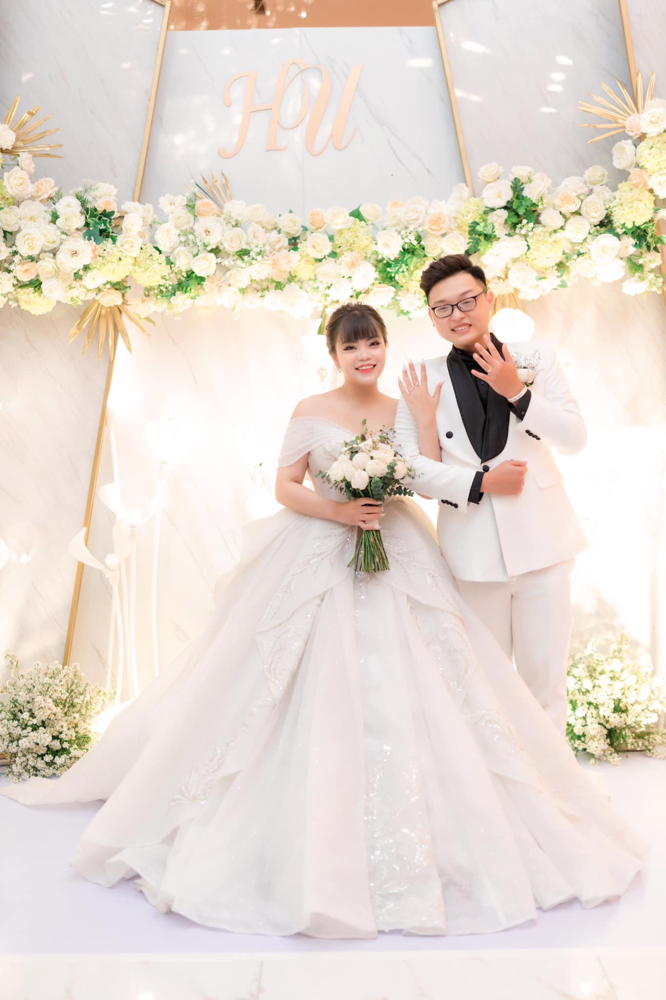

ABOUT ME
Back to December 31st2016, before New Year's eve, I left Vietnam to study in USA for 3 years and returned to Vietnam in 2019. I have been working as an IT Help Desk and SPOC. I have done really good in my career as well as my life. However, I still decide to leave everything and start again with a new different career so I can do what I really love. A lot of people, even my family questioned me: Why do you want to start over?.
For me, it is never too late to do what you really want, no matter how hard it could be. I had been through a lot of accidents in my life. I had to leave high school in the middle of the semester because of my health issue, it took me at least 1 year to recover and I had to start again. I fell behind with my friends, but I never give up, and I always try my best to achieve my goals.
"